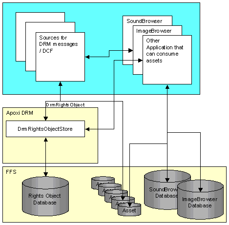
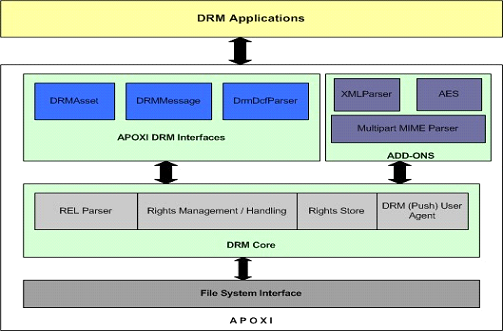

DRM Overview
1 Introduction
APOXI DRM enables the programmers to create DRM (Digital Rights Management) enabled applications. APOXI DRM complies with OMA DRM (Open Mobile Alliance DRM) standards.
2 Architecture
OMA DRM in APOXI processes DRM Messages, provides a central storage of rights objects and makes the applications aware of constraints/restrictions on DRM operations (play, print, execute, display).
 |
Figure 1. DRM Architecture
APOXI DRM provides interfaces for:
2.1 Trust Model
Applications (Image browser, sound browser, MMS applications, WAP applications etc.) have to be adapted to support DRM. Applications need tight integration with APOXI DRM to validate rights before consuming DRM content. DRM enabled applications in APOXI are trusted to enforce rights by using APOXI DRM API.
2.2 APOXI Scope
The APOXI scope for DRM are listed in the following:
2.3 Application Scope
The application scope for DRM are given in the following list:
3 APOXI DRM - Components/Modules
All those modules which are part of or interact with DRM are shown in the following figure.
 |
Figure 2. APOXI DRM - Components/Modules
4 APOXI DRM Interfaces
APOXI DRM has two key classes, DRMAsset and DRMMessage abstracting the asset (content) and the incoming DRM message (FL, CD or SD) respectively. In addition to this it has a range of classes that abstracts the constraint, permission, rights object and the rights object store which are internal to the APOXI DRM Core.
4.1 DRMAsset
DRMAsset abstracts the DRM content, meaning the entire DRM Message. All DRM content (like Image, Mp3sound etc.) classes are (also) expected to derive from this class. It is a light-weight mix-in class that has only one data member - the local ID. It has APIs to validate rights and access/update data from the rights objects.
4.2 DRMMessage
DRMMessage is a message processor which can parse and store rights from an incoming DRM Message. The message could be FL, CD or SD (DCF). Applications will use this interface to process DRM Messages (including rights message, in case of SD). After processing the message, it returns a local ID, which the application stores in the Asset.
4.3 DRM Local ID
DRM Local ID is an internally generated ID to minimize the handling of UID, which is a long string. UID is defined by the DRM specification as content ID which is referred in the content as well as the rights object. A particular asset may be associated with multiple rights object (only in case of separate delivery) but still has the same local id.
APOXI DRM returns a local ID when the application processes the incoming DRM message. Applications are required to store this ID and use it as a key to DRM subsystem for further API calls. For this purpose, the FFS is extended to include DRM Local ID and the DRM Mime Type as file attributes. This also helps applications to distinguish DRM enabled content from regular content.
A value 0 indicates invalid DRM Local ID (thereby indicates that this may not be a valid DRM asset). APOXI DRM has maximum possible local IDs, which is configurable.